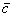

|
|
||||||
| Variable |
Variable in Code |
Description | Units | Value(s) | Source | Notes |
|---|---|---|---|---|---|---|
| b | bw | wingspan | ft | 16.9 | Bray pg 33 | |
|  | cbar | wing mean aerodynamic chord | ft | 1.80 | Bray pg 33 | |
| S | Sw | wing surface area | ft2 | 30.42 | Bray pg 33 | |
|
|
||||||
| Variable |
Variable in Code |
Description | Units | Value(s) | Source | Notes |
|---|---|---|---|---|---|---|
| emax | demax | maximum elevator deflection | deg | +20 | Bray pg 31 | |
| emin | demin | minimum elevator deflection | deg | -20 | Bray pg 31 | |
| amax | damax | maximum aileron deflection | deg | +20 | Bray pg 31 | |
| amin | damin | minimum aileron deflection | deg | -20 | Bray pg 31 | |
| rmax | drmax | maximum rudder deflection | deg | +20 | Bray pg 31 | |
| rmin | drmin | minimum rudder deflection | deg | -20 | Bray pg 31 | |
|
|
||||||
| Variable |
Variable in Code |
Description | Units | Value(s) | Source | Notes |
|---|---|---|---|---|---|---|
| GTOW | Weight | gross takeoff weight | lb | 420 | Bray pg 33 |
converted to Mass [slug/ft3] in code |
| Ixx | I_xx | roll inertia | slug ft2 | 34.832 |
IAI (manufacturer) MSS notes |
|
| Iyy | I_yy | pitch inertia | slug ft2 | 67.08 |
IAI (manufacturer) MSS notes |
|
| Izz | I_zz | yaw inertia | slug ft2 | 82.22 |
IAI (manufacturer) MSS notes |
|
| Ixz | I_xz | lateral cross inertia | slug ft2 | -4.902 |
IAI (manufacturer) MSS notes |
|
|
|
||||||
| Variable |
Variable in Code |
Description | Units | Value(s) | Source | Notes |
|---|---|---|---|---|---|---|
| Tmax | simpleSingleMaxThrust | maximum thrust | lb | 150 | - |
approximated from max power of 27 hp |
|
|
||||||
| Variable |
Variable in Code |
Description | Units | Value(s) | Source | Notes |
|---|---|---|---|---|---|---|
| CD | CDfa | drag coefficient vs. angle of attack | - |
alpha CD -8 0.0734 -7 0.0674 -6 0.0629 -5 0.0597 -4 0.0576 -3 0.0568 -2 0.0569 -1 0.0580 0 0.0601 1 0.0630 2 0.0668 3 0.0713 4 0.0767 5 0.0830 6 0.0900 7 0.0980 8 0.1069 9 0.1167 10 0.1276 11 0.1397 12 0.1530 13 0.1676 14 0.1837 15 0.2014 16 0.2209 17 0.2423 |
Bray pg 50 Table 4.7 |
in deg |
| CD | CDfade | change in drag due to elevator | - |
alpha e=-20 e=-15 e=-10 e=-5 e=5 e=10 e=15 e=20 -7 0.0231 0.0178 0.0111 0.0058 -0.0028 -0.0053 -0.0063 -0.0029 -6 0.0209 0.0155 0.0095 0.0050 -0.0021 -0.0037 -0.0043 -0.0007 -5 0.0187 0.0135 0.0081 0.0043 -0.0015 -0.0024 -0.0025 0.0012 -4 0.0166 0.0117 0.0069 0.0037 -0.0010 -0.0014 -0.0010 0.0028 -3 0.0147 0.0101 0.0057 0.0031 -0.0006 -0.0005 0.0002 0.0042 -2 0.0129 0.0086 0.0047 0.0025 -0.0003 0.0002 0.0013 0.0053 -1 0.0113 0.0073 0.0038 0.0020 0.0000 0.0008 0.0022 0.0064 0 0.0098 0.0061 0.0030 0.0016 0.0003 0.0013 0.0031 0.0074 1 0.0086 0.0050 0.0022 0.0011 0.0005 0.0018 0.0039 0.0082 2 0.0074 0.0040 0.0015 0.0007 0.0007 0.0022 0.0046 0.0091 3 0.0063 0.0030 0.0008 0.0003 0.0010 0.0026 0.0053 0.0099 4 0.0053 0.0020 0.0001 -0.0001 0.0012 0.0030 0.0060 0.0108 5 0.0043 0.0010 -0.0006 -0.0005 0.0014 0.0034 0.0068 0.0117 6 0.0031 0.0000 -0.0013 -0.0009 0.0016 0.0039 0.0076 0.0126 7 0.0017 -0.0010 -0.0020 -0.0013 0.0018 0.0044 0.0084 0.0136 8 0.0001 -0.0020 -0.0027 -0.0018 0.0020 0.0050 0.0093 0.0147 9 -0.0020 -0.0031 -0.0035 -0.0022 0.0023 0.0056 0.0102 0.0158 10 -0.0046 -0.0042 -0.0042 -0.0027 0.0025 0.0063 0.0112 0.0170 11 -0.0079 -0.0054 -0.0050 -0.0032 0.0028 0.0070 0.0122 0.0182 12 -0.0120 -0.0067 -0.0058 -0.0037 0.0031 0.0078 0.0133 0.0195 13 -0.0171 -0.0080 -0.0067 -0.0043 0.0035 0.0086 0.0144 0.0209 14 -0.0234 -0.0094 -0.0075 -0.0048 0.0038 0.0095 0.0155 0.0222 15 -0.0311 -0.0109 -0.0084 -0.0054 0.0041 0.0103 0.0167 0.0236 16 -0.0403 -0.0125 -0.0093 -0.0060 0.0045 0.0111 0.0177 0.0250 17 -0.0543 -0.0141 -0.0102 -0.0066 0.0048 0.0119 0.0188 0.0263 |
Bray pg 45 Table 4.6 |
in deg e in deg e positive down |
| CL | CLfa | lift coefficient vs. angle of attack | - |
alpha CL -8 -0.384 -7 -0.294 -6 -0.202 -5 -0.107 -4 -0.010 -3 0.088 -2 0.187 -1 0.286 0 0.385 1 0.483 2 0.580 3 0.674 4 0.766 5 0.855 6 0.940 7 1.022 8 1.098 9 1.170 10 1.235 11 1.295 12 1.347 13 1.392 14 1.430 15 1.458 16 1.478 17 1.488 |
Bray pg 50 Table 4.7 |
in deg |
CL
|
CL_adot | lift due to angle of attack rate | 1/rad | 2.42 | Bray pg 33 | |
| CLq | CL_q | lift due to pitch rate | 1/rad | 8.05 | Bray pg 33 | |
| CL | CLfade | change in lift due to elevator | - |
alpha e=-20 e=-15 e=-10 e=-5 e=5 e=10 e=15 e=20 -7 -0.088 -0.075 -0.057 -0.036 0.025 0.058 0.093 0.100 -6 -0.093 -0.079 -0.061 -0.038 0.026 0.059 0.093 0.101 -5 -0.098 -0.083 -0.064 -0.040 0.027 0.060 0.094 0.101 -4 -0.103 -0.087 -0.067 -0.041 0.027 0.061 0.095 0.102 -3 -0.106 -0.091 -0.070 -0.043 0.028 0.062 0.096 0.103 -2 -0.110 -0.094 -0.072 -0.044 0.029 0.063 0.097 0.104 -1 -0.113 -0.097 -0.074 -0.045 0.030 0.064 0.098 0.106 0 -0.116 -0.100 -0.076 -0.045 0.030 0.065 0.099 0.107 1 -0.118 -0.102 -0.078 -0.045 0.031 0.066 0.099 0.108 2 -0.119 -0.105 -0.079 -0.045 0.031 0.066 0.100 0.110 3 -0.121 -0.107 -0.079 -0.045 0.032 0.067 0.100 0.111 4 -0.122 -0.108 -0.080 -0.045 0.032 0.067 0.100 0.112 5 -0.122 -0.110 -0.080 -0.044 0.032 0.068 0.100 0.113 6 -0.123 -0.111 -0.080 -0.043 0.032 0.068 0.100 0.113 7 -0.123 -0.111 -0.080 -0.042 0.032 0.068 0.099 0.114 8 -0.122 -0.111 -0.079 -0.041 0.032 0.068 0.098 0.113 9 -0.122 -0.111 -0.078 -0.040 0.032 0.067 0.096 0.113 10 -0.121 -0.110 -0.077 -0.038 0.032 0.066 0.094 0.111 11 -0.119 -0.109 -0.075 -0.037 0.031 0.065 0.092 0.110 12 -0.118 -0.108 -0.073 -0.035 0.030 0.064 0.089 0.107 13 -0.116 -0.106 -0.071 -0.033 0.029 0.062 0.086 0.104 14 -0.114 -0.103 -0.068 -0.031 0.028 0.061 0.082 0.100 15 -0.112 -0.100 -0.065 -0.029 0.027 0.058 0.078 0.096 16 -0.109 -0.097 -0.062 -0.027 0.025 0.055 0.073 0.090 17 -0.107 -0.093 -0.058 -0.025 0.024 0.052 0.068 0.084 |
Bray pg 41 Table 4.4 |
in deg e in deg e positive down |
| Cm | Cmfa | pitch moment coefficient vs. alpha | - |
alpha Cm -8 0.411 -7 0.39 -6 0.365 -5 0.338 -4 0.309 -3 0.279 -2 0.251 -1 0.222 0 0.194 1 0.167 2 0.139 3 0.11 4 0.08 5 0.047 6 0.012 7 -0.027 8 -0.07 9 -0.116 10 -0.168 11 -0.223 12 -0.281 13 -0.342 14 -0.404 15 -0.465 16 -0.522 17 -0.573 |
Bray pg 50 Table 4.7 |
in deg |
|
Cm
|
Cm_adot | pitch moment due to angle of attack rate | 1/rad | -11.0 | Bray pg 33 | |
| Cmq | Cm_q | pitch moment due to pitch rate | 1/rad | -36.6 | Bray pg 33 | |
| Cm | Cmfade | change in pitch moment due to elevator | - |
alpha e=-25 e=-20 e=-15 e=-10 e=-5 e=0 e=5 e=10 e=15 e=20 -6 0.9219 0.8532 0.7722 0.6464 0.5099 0.3524 0.2042 0.0376 -0.1100 -0.1353 -4 0.8735 0.8031 0.7138 0.5998 0.4673 0.3050 0.1561 -0.0146 -0.1606 -0.1817 -2 0.8270 0.7546 0.6717 0.5590 0.4248 0.2505 0.1051 -0.0750 -0.2137 -0.2356 0 0.7798 0.7073 0.6258 0.5156 0.3705 0.1922 0.0403 -0.1391 -0.2678 -0.3001 2 0.7413 0.6698 0.5939 0.4682 0.3111 0.1331 -0.0198 -0.1921 -0.3162 -0.3675 4 0.6706 0.5983 0.5384 0.4039 0.2426 0.0681 -0.0833 -0.2594 -0.3780 -0.4532 6 0.5870 0.5275 0.4621 0.3265 0.1675 -0.0041 -0.1556 -0.3327 -0.4518 -0.5296 8 0.5293 0.4822 0.4109 0.2551 0.0901 -0.0826 -0.2472 -0.4179 -0.5384 -0.6121 10 0.4276 0.3743 0.3178 0.1513 -0.0115 -0.1771 -0.3376 -0.5038 -0.6162 -0.6925 12 0.3045 0.2520 0.2058 0.0404 -0.1199 -0.2850 -0.4361 -0.5937 -0.6994 -0.7772 13 0.2379 0.1943 0.1426 -0.0216 -0.1775 -0.3435 -0.4882 -0.6446 -0.7465 -0.8266 14 0.1698 0.1367 0.0705 -0.0911 -0.2419 -0.4058 -0.5455 -0.7024 -0.8015 -0.8897 15 0.1088 0.0721 0.0028 -0.1512 -0.3048 -0.4655 -0.6097 -0.7536 -0.8507 -0.9399 16 0.0503 0.0109 -0.0594 -0.2198 -0.3693 -0.5284 -0.6657 -0.8052 -0.9030 -0.9818 17 -0.0060 -0.0452 -0.1230 -0.2834 -0.4290 -0.5830 -0.7117 -0.8406 -0.9229 -0.9877 18 -0.0704 -0.1072 -0.1827 -0.3425 -0.4869 -0.6260 -0.7409 -0.8481 -0.9051 -0.9575 19 -0.1576 -0.1668 -0.2384 -0.3938 -0.5246 -0.6414 -0.7367 -0.8320 -0.8863 -0.9439 20 -0.2624 -0.2034 -0.2822 -0.4234 -0.5369 -0.6366 -0.7260 -0.8175 -0.8832 -0.9447 |
Bray pg 34 Fig. 4.2 |
in deg e in deg e positive down |
CY
|
CY_beta | side force fue to sideslip angle | 1/rad | -0.819 | Bray pg 33 | |
| CYp | CY_p | side force due to roll rate | 1/rad | none | not available | |
| CYr | CY_r | side force due to yaw rate | 1/rad | none | not available | |
| CYa | CY_da | side force due to aileron | 1/rad | none | not available | |
| CY | CYfbetadr | change in side force due to rudder | - |
beta r=-20 r=0 r=20 -20 0.19 -0.05 -0.25 0 0.24 0.00 -0.22 20 0.29 0.05 -0.18 |
Bray pg 62 Fig. 4.19 |
in deg r in deg r positive left |
|
Cl
|
Cl_beta | dihedral effect | 1/rad | -0.023 | Bray pg 33 | |
| Clp | Cl_p | roll damping | 1/rad | -0.450 | Bray pg 33 | |
| Clr | Cl_r | roll moment due to yaw rate | 1/rad | 0.265 | Bray pg 33 | |
| Cl | Clfada | change in roll moment due to aileron | - |
alpha a=-5 a=-10 a=-15 a=-20 a=-25 -10.31 0.0140 0.0280 0.0366 0.0446 0.0533 -8.22 0.0143 0.0281 0.0375 0.0463 0.0553 -6.12 0.0148 0.0292 0.0386 0.0482 0.0568 -4.01 0.0148 0.0299 0.0408 0.0484 0.0563 -1.91 0.0153 0.0296 0.0400 0.0475 0.0568 0.20 0.0158 0.0299 0.0405 0.0482 0.0573 2.29 0.0160 0.0308 0.0424 0.0519 0.0604 4.40 0.0160 0.0308 0.0424 0.0519 0.0604 6.50 0.0152 0.0295 0.0422 0.0527 0.0614 8.59 0.0144 0.0279 0.0407 0.0521 0.0616 10.65 0.0128 0.0260 0.0382 0.0495 0.0597 12.71 0.0118 0.0238 0.0364 0.0466 0.0558 13.72 0.0109 0.0222 0.0332 0.0437 0.0524 14.73 0.0105 0.0202 0.0307 0.0411 0.0487 15.74 0.0093 0.0177 0.0280 0.0388 0.0461 16.75 0.0093 0.0167 0.0267 0.0360 0.0423 17.75 0.0087 0.0147 0.0238 0.0333 0.0376 18.75 0.0073 0.0105 0.0179 0.0285 0.0342 19.74 0.0061 0.0066 0.0130 0.0226 0.0280 20.73 0.0016 0.0028 0.0077 0.0170 0.0229 |
Bray pg 58 Table 4.8 |
in deg a in deg
a positive |
| Clr | Cl_dr | roll moment due to rudder | 1/rad | -0.00229 | Bray pg 33 | r positive left |
|
Cn
|
Cn_beta | weathercock stability | 1/rad | 0.109 | Bray pg 33 | |
| Cnp | Cn_p | adverse yaw | 1/rad | -0.110 | Bray pg 33 | |
| Cnr | Cn_r | yaw damping | 1/rad | -0.200 | Bray pg 33 | |
| Cn | Cnfada | change in yaw moment due to aileron | - |
alpha a=-5 a=-10 a=-15 a=-20 a=-25 -8 0.0004 0.0013 0.0014 0.0022 0.0025 -7 0.0002 0.0009 0.0008 0.0015 0.0018 -6 0.0001 0.0004 0.0003 0.0008 0.0010 -5 -0.0001 0.0000 -0.0002 0.0001 0.0003 -4 -0.0002 -0.0004 -0.0007 -0.0005 -0.0004 -3 -0.0004 -0.0007 -0.0011 -0.0012 -0.0012 -2 -0.0005 -0.0011 -0.0016 -0.0019 -0.0019 -1 -0.0007 -0.0015 -0.0021 -0.0025 -0.0026 0 -0.0008 -0.0018 -0.0026 -0.0032 -0.0033 1 -0.0010 -0.0022 -0.0030 -0.0038 -0.0040 2 -0.0011 -0.0025 -0.0035 -0.0044 -0.0047 3 -0.0013 -0.0029 -0.0040 -0.0050 -0.0054 4 -0.0015 -0.0032 -0.0044 -0.0057 -0.0061 5 -0.0016 -0.0035 -0.0049 -0.0063 -0.0068 6 -0.0018 -0.0038 -0.0053 -0.0069 -0.0074 7 -0.0019 -0.0041 -0.0057 -0.0075 -0.0081 8 -0.0021 -0.0043 -0.0062 -0.0081 -0.0088 9 -0.0022 -0.0046 -0.0066 -0.0087 -0.0094 10 -0.0024 -0.0049 -0.0070 -0.0093 -0.0101 11 -0.0026 -0.0051 -0.0074 -0.0098 -0.0107 12 -0.0027 -0.0054 -0.0078 -0.0104 -0.0114 13 -0.0029 -0.0056 -0.0082 -0.0110 -0.0120 14 -0.0030 -0.0058 -0.0086 -0.0115 -0.0127 15 -0.0032 -0.0060 -0.0090 -0.0121 -0.0133 16 -0.0034 -0.0062 -0.0094 -0.0126 -0.0139 17 -0.0035 -0.0064 -0.0098 -0.0132 -0.0145 |
Bray pg 61 Table 4.9 |
in deg a in deg
a positive |
| Cn | Cnfbetadr | change in yaw moment due to rudder | - |
beta r=-25 r=-20 r=-15 r=-10 r=-5 r=0 r=5 r=10 r=15 r=20 r=25 -20 0.0067 0.0027 -0.0027 -0.0094 -0.0154 -0.0214 -0.0274 -0.0334 -0.0401 -0.0455 -0.0495 -17.5 0.0000 0.0013 -0.0054 -0.0127 -0.0214 -0.0277 -0.0340 -0.0427 -0.0500 -0.0567 -0.0554 -15 0.0040 0.0020 -0.0040 -0.0114 -0.0200 -0.0283 -0.0366 -0.0452 -0.0526 -0.5860 -0.0606 -12.5 0.0087 0.0074 0.0027 -0.0047 -0.0134 -0.0222 -0.0310 -0.0397 -0.0471 -0.0052 -0.0531 -10 0.0121 0.0101 0.0054 -0.0014 -0.0101 -0.0188 -0.0275 -0.0362 -0.0430 -0.0477 -0.0497 -7.5 0.0161 0.0127 0.0087 0.0013 -0.0064 -0.0161 -0.0258 -0.0335 -0.0409 -0.0449 -0.0483 -5 0.0200 0.0174 0.0134 0.0067 -0.0020 -0.0131 -0.0242 -0.0329 -0.0396 -0.0436 -0.0462 -2.5 0.0275 0.0235 0.0188 0.0127 0.0047 -0.0067 -0.0181 -0.0261 -0.0322 -0.0369 -0.0409 0 0.0335 0.0295 0.0255 0.0188 0.0114 0.0000 -0.0074 -0.0148 -0.0215 -0.0255 -0.0295 2.5 0.0382 0.0348 0.0288 0.0228 0.0154 0.0060 -0.0034 -0.0108 -0.0168 -0.0228 -0.0262 5 0.0429 0.0389 0.0328 0.0261 0.0121 0.0101 0.0081 -0.0059 -0.0126 -0.0187 -0.0227 7.5 0.0476 0.0429 0.0375 0.0288 0.0248 0.0154 0.0060 0.0020 -0.0067 -0.0121 -0.0168 10 0.0516 0.0462 0.0422 0.0348 0.0295 0.0188 0.0081 0.0028 -0.0046 -0.0086 -0.0140 11.25 0.0549 0.0489 0.0442 0.0375 0.0315 0.0201 0.0087 0.0027 -0.0040 -0.0088 -0.0147 12.5 0.0563 0.0509 0.0462 0.0395 0.0335 0.0235 0.0135 0.0075 0.0008 -0.0039 -0.0093 13.75 0.0570 0.0509 0.0469 0.0402 0.0342 0.0268 0.0194 0.0134 0.0067 0.0027 -0.0034 15 0.0523 0.0482 0.0429 0.0369 0.0322 0.0255 0.0188 0.0141 0.0081 0.0001 -0.0013 16.25 0.0503 0.0442 0.0415 0.0355 0.0308 0.0255 0.0202 0.0155 0.0095 0.0068 0.0007 17.5 0.0509 0.0428 0.0422 0.0355 0.0308 0.0235 0.0162 0.0115 0.0048 0.0042 -0.0039 18.75 0.0509 0.0436 0.0429 0.0362 0.0308 0.0235 0.0162 0.0108 0.0041 0.0034 -0.0039 20 0.0509 0.0442 0.0429 0.0369 0.0322 0.0248 0.0174 0.0127 0.0067 0.0054 -0.0013 |
Bray pg 63 Fig. 4.20 |
in deg r in deg r positive left |